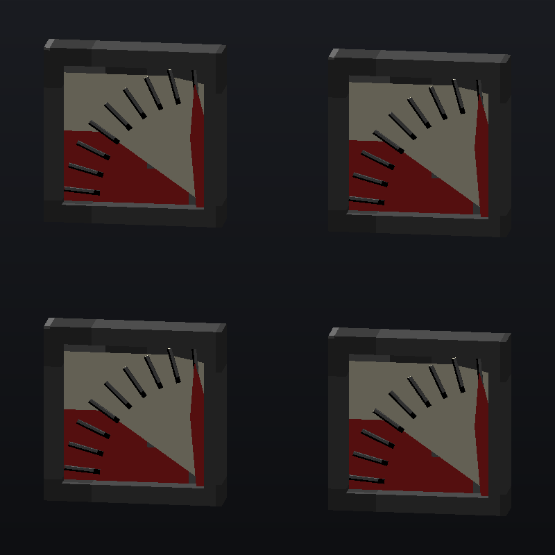
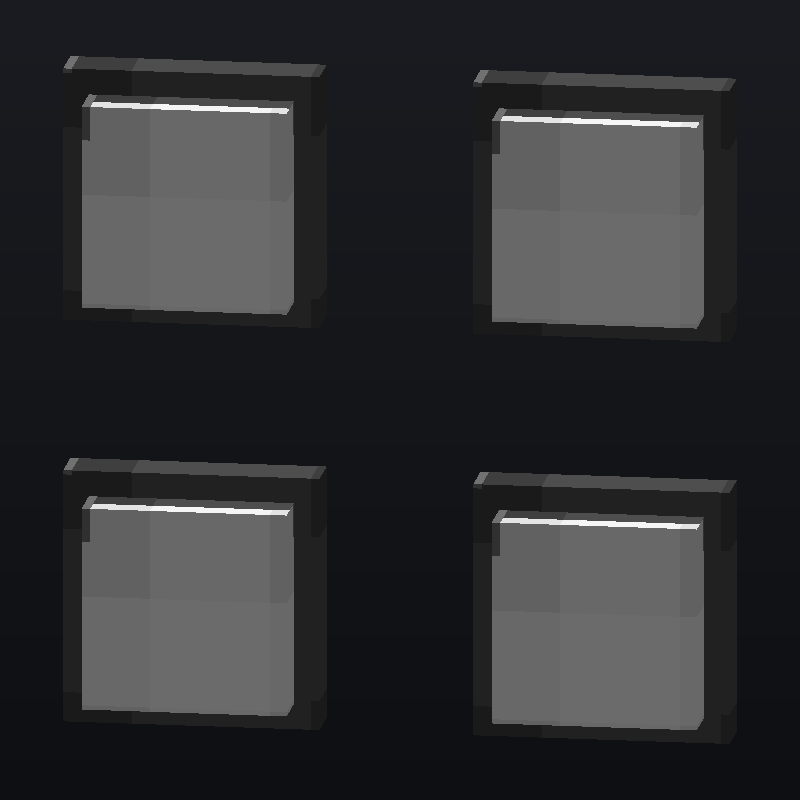
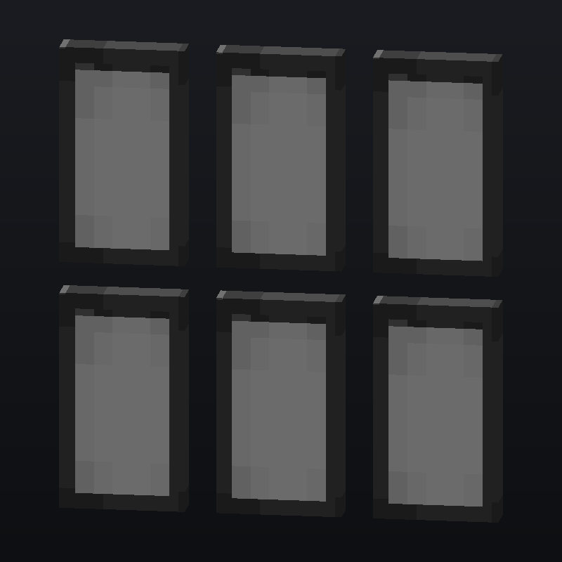
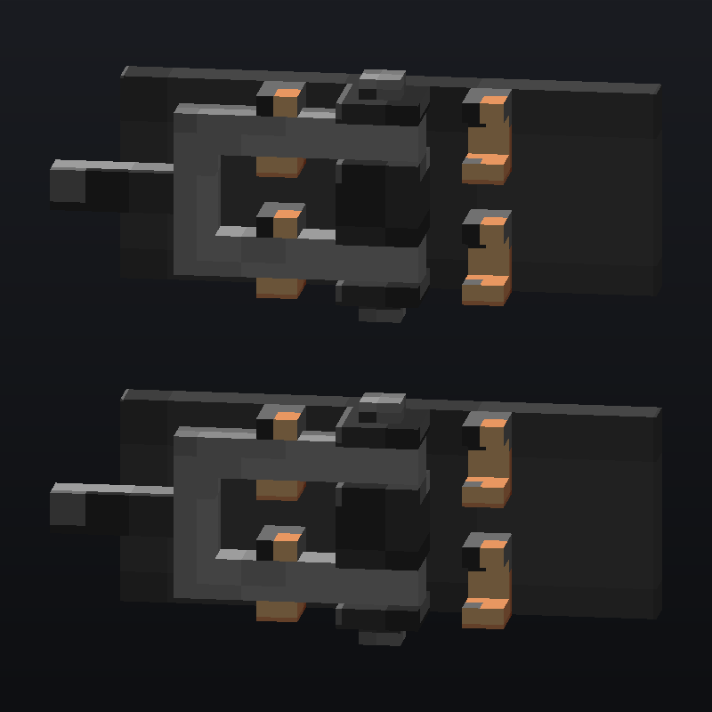
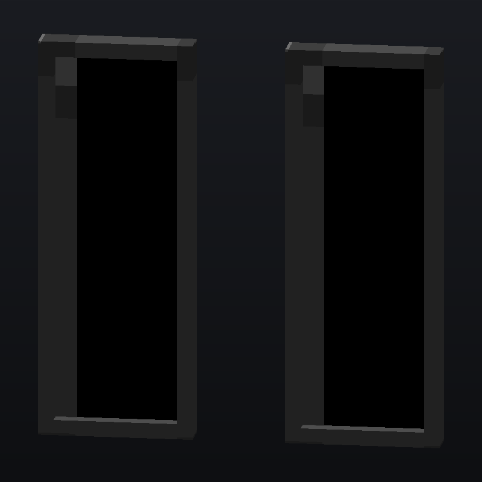
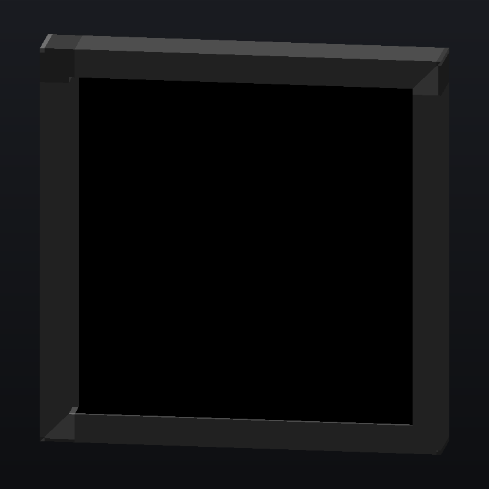

无线红石信号流量控制器面板 Redstone-over-Radio Gauge
- 方块
rbmk_gauge- 模型
gauge.obj- 贴图
textures/models/network/gauge.png- 部件
Needle, Gauge- 规模
- 129 面 · 4 unit · 排布 516 面
4 个表盘，指针 pivot (0,0.4375,-0.125) 绕 -X 转 angle-85，angle∈[0,80]
只要方块表面的东西 · 箱体不在 obj 里（由 RenderBlocksNT 单独绘制）· 源 HbmMods/Hbm-s-Nuclear-Tech-GIT @ bf238d8 · LGPLv3

rbmk_gaugegauge.objtextures/models/network/gauge.pngNeedle, Gauge4 个表盘，指针 pivot (0,0.4375,-0.125) 绕 -X 转 angle-85，angle∈[0,80]

rbmk_key_padbutton.objtextures/models/network/keypad.pngSocket, Button4 个按钮，按下时 Button 沿 +X 偏移 -0.03125

rbmk_indicatorindicator.objtextures/models/network/indicator.pngLight, Base6 个指示灯，Light 面片满亮绘制

rbmk_leverlever.objtextures/models/network/lever.pngLever, Base2 个拉杆，Lever 手柄 pivot (0.125,0.5625,0) 绕 Z 转 -180*progress

rbmk_numitronnumitron.objtextures/models/network/numitron.pngPlane2 个数码屏；数字由 numitron_lights.png 叠层绘制，不在模型里

rbmk_graphnumitron.objtextures/models/network/numitron.pngPlane复用 numitron 模型，曲线由代码绘制

rbmk_terminalterminal.objtextures/models/network/terminal.pngBase单件终端；文字行按 translate(0,10*scale,0) 滚动
radio_torch_*(无 obj，纯立方体)textures/blocks/rtty_*.png—6 个单方块，只有 6 面贴图，开/关状态两张图